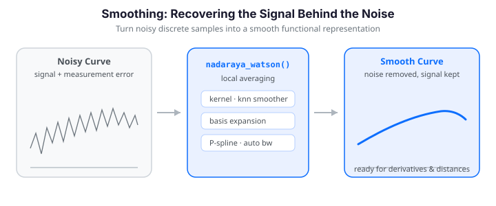

Smoothing Functional Data¶

Why Smooth Functional Data?¶
Real-world functional measurements almost always carry noise -- from instrument limitations, random sampling variation, and digitization. Smoothing turns noisy discrete samples into a smooth functional representation, which matters for several reasons:
- Derivatives amplify noise severely; a smooth curve is a prerequisite for differentiation (see Working with Derivatives).
- Curve comparisons (distances, alignment, depth) are meaningful only once the wiggle of measurement error is removed.
- Visualization and inference both rely on the underlying signal, not the noise on top of it.
fdars offers several complementary approaches. This guide walks through kernel smoothers, k-nearest-neighbor smoothing, basis expansion, and penalized-basis (P-spline) smoothing -- with automatic bandwidth and penalty selection -- using a real dataset throughout.
Available Smoothing Methods¶
| Method | Function(s) | Approach | Key parameter |
|---|---|---|---|
| Nadaraya-Watson | nadaraya_watson |
Kernel-weighted local average | bandwidth \(h\) |
| Local linear | local_linear |
Local linear regression | bandwidth \(h\) |
| Local polynomial | local_polynomial |
Local degree-\(p\) regression | bandwidth \(h\), degree |
| k-NN | knn_smoother |
Average of \(k\) nearest points | neighbors \(k\) |
| Basis expansion | fdata_to_basis_1d |
Project onto B-spline/Fourier basis | basis count \(K\) |
| Penalized basis (fixed) | pspline_fit_1d |
Many basis functions + roughness penalty | penalty \(\lambda\) |
| Penalized basis (auto) | pspline_fit_gcv, smooth_basis_gcv |
Penalized basis with GCV selection | data-driven \(\lambda\) |
The first four live in fdars.smoothing; the basis methods live in
fdars.basis.
Loading Real Data: The Berkeley Growth Study¶
The Berkeley Growth Study tracked the heights of 54 girls and 39 boys from age 1
to 18. It is the canonical functional-data teaching example. fdars ships it via
docs_data.load_growth; we take the girls' curves to match the classic
analysis.
import numpy as np
from fdars import Fdata
from docs_data import load_growth
age, X, meta = load_growth() # age (31,), X (93, 31), meta with 'sex'
girls = X[(meta["sex"] == "female").values] # (54, 31)
fd_raw = Fdata(girls, argvals=age)
print(fd_raw) # Fdata (1D) - 54 obs x 31 points - range [1.0, 18.0]
The heights are measured carefully, so the raw curves already look smooth. To demonstrate smoothing we add synthetic measurement noise (2 cm) to simulate a less precise instrument:
rng = np.random.default_rng(0)
heights_noisy = girls + rng.normal(0, 2.0, size=girls.shape)
fd_noisy = Fdata(heights_noisy, argvals=age)
The panels below show five sample curves before and after adding noise -- the same underlying growth pattern, now buried in jitter:
import numpy as np
from docs_fig import fig, render
from docs_data import load_growth
age, X, meta = load_growth()
girls = X[(meta["sex"] == "female").values]
noisy = girls + np.random.default_rng(0).normal(0, 2.0, size=girls.shape)
f, axes = fig(1, 2, figsize=(9.5, 4.0), sharey=True)
for ax, data, title in [(axes[0], girls, "Original"),
(axes[1], noisy, "With noise (SD = 2 cm)")]:
for i in range(5):
ax.plot(age, data[i], lw=1.6)
ax.set(title=title, xlabel="Age (years)")
axes[0].set_ylabel("Height (cm)")
print(render(f))
The left panel is smooth enough to read a growth trajectory off directly; the right panel scrambles that signal with 2 cm jitter, so features like the pubertal spurt are no longer obvious by eye. Everything below is about recovering the left panel from the right.
Kernel Smoothers¶
Kernel smoothing estimates the value at each point by a weighted average of nearby observations. A kernel function assigns the weights, and a bandwidth \(h\) controls the size of the neighborhood. A smaller \(h\) produces a wigglier fit that chases noise; a larger \(h\) over-smooths and flattens real features. This is the classic bias-variance trade-off.
Nadaraya-Watson¶
The Nadaraya-Watson estimator is a locally weighted average:
where \(K_h(u) = K(u/h)\) is a kernel with bandwidth \(h\).
from fdars.smoothing import nadaraya_watson
y = fd_noisy.data[0]
y_nw = nadaraya_watson(age, y, age, bandwidth=1.5, kernel="gaussian")
The first three arguments are the observed grid x, the observed values y,
and the evaluation grid x_new (here the same grid); the smoother returns the
fitted values at x_new.
Available kernels¶
| Kernel | kernel= |
Shape |
|---|---|---|
| Gaussian | "gaussian" |
\(K(u) = \frac{1}{\sqrt{2\pi}} e^{-u^2/2}\) |
| Epanechnikov | "epanechnikov" |
\(K(u) = \frac{3}{4}(1 - u^2)_+\) |
| Tricube | "tricube" |
$K(u) = \frac{70}{81}(1 - |
y_gauss = nadaraya_watson(age, y, age, bandwidth=1.5, kernel="gaussian")
y_epan = nadaraya_watson(age, y, age, bandwidth=1.5, kernel="epanechnikov")
y_tri = nadaraya_watson(age, y, age, bandwidth=1.5, kernel="tricube")
Kernel choice
In practice, the bandwidth matters far more than the kernel shape. Gaussian is a safe default; Epanechnikov is theoretically MSE-optimal.
Local linear regression¶
The Nadaraya-Watson estimator can suffer from boundary bias: near the edges of the domain, the neighborhood is one-sided, so a flat local average is pulled toward the interior. Local linear regression fits a weighted least-squares line at each evaluation point, which automatically corrects this:
from fdars.smoothing import local_linear
y_ll = local_linear(age, y, age, bandwidth=1.5, kernel="gaussian")
The interface is identical to nadaraya_watson. The comparison below overlays
both kernel fits on one noisy growth curve against the clean original -- notice
how local linear tracks the growth spurt and the endpoints a little better:
import numpy as np
from docs_fig import fig, render
from docs_data import load_growth
from fdars.smoothing import nadaraya_watson, local_linear
age, X, meta = load_growth()
girls = X[(meta["sex"] == "female").values]
noisy = girls + np.random.default_rng(0).normal(0, 2.0, size=girls.shape)
idx, h = 0, 1.5
y = noisy[idx]
nw = np.asarray(nadaraya_watson(age, y, age, bandwidth=h))
ll = np.asarray(local_linear(age, y, age, bandwidth=h))
f, ax = fig()
ax.scatter(age, y, s=16, color="#6c757d", alpha=0.7, label="noisy data")
ax.plot(age, nw, color="#3f51b5", lw=2.0, label="Nadaraya-Watson")
ax.plot(age, ll, color="#198754", lw=2.0, label="local linear")
ax.plot(age, girls[idx], color="#dc3545", lw=1.8, ls="--", label="original")
ax.set(title="Kernel smoother comparison (h = 1.5)",
xlabel="Age (years)", ylabel="Height (cm)")
ax.legend()
print(render(f))
Both fits sit close to the dashed clean curve in the interior, but local linear hugs the original more faithfully at the two endpoints and through the steep growth spurt, where Nadaraya-Watson's one-sided averaging drags the estimate toward the neighbouring interior values.
Local polynomial regression¶
Local linear is the degree-1 case of local polynomial regression. Degree 0 recovers Nadaraya-Watson; higher degrees add flexibility and are useful for estimating derivatives:
from fdars.smoothing import local_polynomial
y_d0 = local_polynomial(age, y, age, bandwidth=1.5, degree=0) # = Nadaraya-Watson
y_d1 = local_polynomial(age, y, age, bandwidth=1.5, degree=1) # = local linear
y_d2 = local_polynomial(age, y, age, bandwidth=1.5, degree=2) # local quadratic
y_d3 = local_polynomial(age, y, age, bandwidth=1.5, degree=3) # local cubic
Higher degrees need wider bandwidths
Increasing degree amplifies noise. Compensate with a larger bandwidth or
select one by cross-validation.
Applying a smoother matrix to a whole sample¶
Because the kernel weights depend only on the grid and the bandwidth -- not on
the \(y\) values -- the Nadaraya-Watson smoother is a linear operator: a fixed
matrix \(S\) with \(\hat{\mathbf y} = S\,\mathbf y\). smoothing_matrix_nw builds
that matrix once so you can smooth every curve in a sample with a single
matrix multiply:
from fdars.smoothing import smoothing_matrix_nw
S = np.asarray(smoothing_matrix_nw(age, bandwidth=1.5)) # (31, 31)
fd_kernel = Fdata(fd_noisy.data @ S.T, argvals=age) # smooth all 54 curves
This is exactly the workflow the R package exposes as S.NW(tt, h) followed by
S %*% curve.
Bandwidth Selection via Cross-Validation¶
Choosing \(h\) is the most important decision in kernel smoothing. Rather than
guess, optim_bandwidth searches a grid and minimizes either leave-one-out
cross-validation (CV) or generalized cross-validation (GCV).
Generalized cross-validation (default)¶
from fdars.smoothing import optim_bandwidth
result = optim_bandwidth(age, y, criterion="gcv", kernel="gaussian")
print(f"Optimal bandwidth: {result['h_opt']:.4f}")
print(f"GCV score: {result['value']:.6f}")
y_opt = nadaraya_watson(age, y, age, bandwidth=result["h_opt"])
optim_bandwidth returns a dict with h_opt (the selected bandwidth),
criterion, and value (the criterion at the optimum).
Leave-one-out cross-validation¶
result_cv = optim_bandwidth(age, y, criterion="cv", kernel="gaussian")
print(f"Optimal bandwidth (CV): {result_cv['h_opt']:.4f}")
Controlling the search grid¶
result_fine = optim_bandwidth(
age, y,
criterion="gcv", kernel="gaussian",
n_grid=100, # finer grid
h_min=0.5, # lower bound (data on a 1-18 year scale)
h_max=5.0, # upper bound
)
If you only need the score at a given bandwidth (e.g. to draw the CV curve
yourself), gcv_smoother and cv_smoother return that scalar directly:
from fdars.smoothing import gcv_smoother, cv_smoother
score_gcv = gcv_smoother(age, y, bandwidth=1.5)
score_cv = cv_smoother(age, y, bandwidth=1.5)
GCV vs CV
GCV is an algebraic approximation to leave-one-out CV that avoids refitting the model \(n\) times. It is faster and usually gives similar results.
The figure below plots the GCV curve over a grid of bandwidths and marks the minimum -- the classic U-shape of the bias-variance trade-off:
import numpy as np
from docs_fig import fig, render
from docs_data import load_growth
from fdars.smoothing import gcv_smoother, optim_bandwidth
age, X, meta = load_growth()
girls = X[(meta["sex"] == "female").values]
noisy = girls + np.random.default_rng(0).normal(0, 2.0, size=girls.shape)
y = noisy[0]
hs = np.linspace(0.4, 5.0, 40)
scores = np.array([gcv_smoother(age, y, bandwidth=h) for h in hs])
opt = optim_bandwidth(age, y, criterion="gcv", h_min=0.4, h_max=5.0, n_grid=80)
f, ax = fig()
ax.plot(hs, scores, color="#3f51b5", lw=2.0)
ax.axvline(opt["h_opt"], color="#dc3545", ls="--",
label=f"h_opt = {opt['h_opt']:.2f}")
ax.set(title="GCV as a function of bandwidth",
xlabel="bandwidth h", ylabel="GCV score")
ax.legend()
print(render(f))
The curve falls steeply, bottoms out at the marked h_opt, then rises again --
the signature bias-variance U. To the left of the minimum the fit chases noise
(high variance); to the right it over-smooths (high bias). Reading the minimum
off this curve is exactly what optim_bandwidth automates.
k-Nearest-Neighbors Smoother¶
Instead of a fixed bandwidth in the units of \(t\), the k-NN smoother averages the
k observations nearest each evaluation point. The effective bandwidth then
adapts to the local density -- growing where data is sparse and shrinking
where it is dense, which suits the unequal age spacing of the growth data:
Choosing k
Larger k produces smoother curves; smaller k follows local features more
closely. With only 31 points here, k in the single digits is reasonable.
knn_gcv picks k for you by generalized cross-validation, returning the
optimal k and the CV error for every candidate:
from fdars.smoothing import knn_gcv
sel = knn_gcv(age, y, max_k=20)
print(f"Optimal k: {sel['optimal_k']}") # dict with 'optimal_k', 'cv_errors'
Basis Expansion¶
A basis expansion represents each curve as a linear combination of \(K\) smooth basis functions, \(x(t) \approx \sum_{k=1}^K c_k \phi_k(t)\). Choosing \(K\) smaller than the number of sampling points achieves smoothing and dimensionality reduction in one step -- projecting the noisy data onto a lower-dimensional smooth subspace.
from fdars.basis import fdata_to_basis_1d, basis_to_fdata_1d
coefs = fdata_to_basis_1d(fd_noisy.data, age, n_basis=12, basis_type="bspline")
fd_basis = Fdata(
basis_to_fdata_1d(coefs, age, n_basis=12, basis_type="bspline"),
argvals=age,
)
Automatic basis selection¶
basis_nbasis_cv chooses \(K\) by cross-validation over a range of candidates
(mirroring R's fdata2basis_cv), supporting GCV (default), CV, AIC, and BIC:
from fdars.basis import basis_nbasis_cv
cv_basis = basis_nbasis_cv(
fd_noisy.data, age,
nbasis_min=5, nbasis_max=20,
basis_type="bspline", criterion="gcv",
)
print(f"Optimal nbasis: {cv_basis['optimal_nbasis']}")
# keys: 'optimal_nbasis', 'scores', 'nbasis_range', 'criterion'
Choosing n_basis
A rule of thumb for B-splines is n_basis ~ n_points / 5 to n_points / 4.
A roughness penalty (next section) prevents overfitting even with many basis
functions, so you rarely need to tune \(K\) precisely once you penalize.
Penalized Basis (P-spline) Smoothing¶
Penalized-basis smoothing uses many basis functions but adds a roughness penalty so the fit cannot overfit. It minimizes
where \(\Phi\) holds the basis functions evaluated on the grid, \(D\) is a
difference matrix of a chosen order (2 penalizes curvature), and \(\lambda\)
tunes the fit-vs-smoothness balance. This is the P-spline of Eilers & Marx.
Fixed penalty with pspline_fit_1d¶
When you already know a good \(\lambda\), fit directly:
from fdars.basis import pspline_fit_1d
result_ps = pspline_fit_1d(
fd_noisy.data, age,
n_basis=25, lambda_=1.0, order=2,
)
print(f"EDF: {result_ps['edf']:.2f}")
print(f"RSS: {result_ps['rss']:.4f}")
print(f"AIC: {result_ps['aic']:.2f} BIC: {result_ps['bic']:.2f}")
The effective degrees of freedom (EDF) quantify how much the penalty has shrunk the 25 basis functions -- a small EDF means heavy smoothing.
Automatic penalty via GCV¶
Selecting \(\lambda\) automatically is the recommended default. GCV chooses it by minimizing
Two functions do this. pspline_fit_gcv returns fitted curves plus EDF and
information criteria:
from fdars.basis import pspline_fit_gcv
result_auto = pspline_fit_gcv(fd_noisy.data, age, n_basis=25, order=2)
print(f"EDF: {result_auto['edf']:.2f}")
print(f"GCV: {result_auto['gcv']:.6f}")
print(f"AIC: {result_auto['aic']:.2f} BIC: {result_auto['bic']:.2f}")
Selected \(\lambda\) not returned
pspline_fit_gcv reports the fit quality (EDF, GCV, AIC, BIC) but does not
currently expose the chosen \(\lambda\) itself. If you need the value, search
a grid yourself with pspline_fit_1d and pick the minimum-GCV fit.
smooth_basis_gcv is the higher-level entry point (R's smooth.basis.gcv),
supporting B-spline and Fourier bases and returning coefficients too:
from fdars.basis import smooth_basis_gcv
result_gcv = smooth_basis_gcv(
fd_noisy.data, age,
n_basis=25, basis_type="bspline", lfd_order=2,
)
fitted = result_gcv["fitted"] # (54, 31) smoothed curves
coeffs = result_gcv["coefficients"] # (54, 25) basis coefficients
print(f"EDF: {result_gcv['edf']:.2f} GCV: {result_gcv['gcv']:.6f}")
On these girls' growth curves GCV settles on roughly 8 effective degrees of freedom with a GCV score near 5.7 -- closely matching the R reference implementation.
The effect of the penalty \(\lambda\)¶
Sweeping \(\lambda\) makes the bias-variance trade-off visible. A tiny \(\lambda\) under-smooths (tracks noise); a huge \(\lambda\) over-smooths (loses the growth spurt); the GCV-selected value sits in between:
import numpy as np
from docs_fig import fig, render
from docs_data import load_growth
from fdars.basis import pspline_fit_1d, pspline_fit_gcv
age, X, meta = load_growth()
girls = X[(meta["sex"] == "female").values]
noisy = girls + np.random.default_rng(0).normal(0, 2.0, size=girls.shape)
idx = 0
fits = [
("lambda = 0.001", np.asarray(pspline_fit_1d(noisy, age, 20, 1e-3, 2)["fitted"])[idx]),
("Optimal (GCV)", np.asarray(pspline_fit_gcv(noisy, age, 20, 2)["fitted"])[idx]),
("lambda = 1e5", np.asarray(pspline_fit_1d(noisy, age, 20, 1e5, 2)["fitted"])[idx]),
]
f, axes = fig(1, 3, figsize=(10.5, 3.6), sharey=True)
for ax, (title, fit) in zip(axes, fits):
ax.scatter(age, noisy[idx], s=12, color="#6c757d", alpha=0.6)
ax.plot(age, fit, color="#3f51b5", lw=2.0)
ax.set(title=title, xlabel="Age (years)")
axes[0].set_ylabel("Height (cm)")
print(render(f))
The tiny penalty (left) leaves the fit interpolating the noise point-to-point; the huge penalty (right) has flattened the curve toward a straight line, erasing the pubertal spurt entirely. Only the GCV-selected middle panel keeps the spurt while suppressing the jitter -- confirming that automatic \(\lambda\) selection lands in the sweet spot without manual tuning.
Fourier basis for periodic data¶
For periodic or seasonal data, a Fourier basis is more natural and parsimonious
than B-splines. Here we build ten synthetic periodic curves and smooth them with
smooth_basis_gcv(..., basis_type="fourier"):
import numpy as np
from docs_fig import fig, render
from fdars.basis import smooth_basis_gcv
rng = np.random.default_rng(1)
t = np.linspace(0, 1, 31)
clean = np.sin(2 * np.pi * t) + 0.3 * np.cos(4 * np.pi * t)
periodic = clean + rng.normal(0, 0.25, size=(10, t.size))
res = smooth_basis_gcv(periodic, t, n_basis=13, basis_type="fourier")
fitted = np.asarray(res["fitted"])
f, ax = fig()
ax.scatter(np.tile(t, 3), periodic[:3].ravel(), s=12, color="#6c757d",
alpha=0.5, label="noisy data")
ax.plot(t, clean, color="#dc3545", lw=1.8, ls="--", label="true signal")
for i in range(3):
ax.plot(t, fitted[i], lw=1.8)
ax.set(title=f"Fourier smoothing (GCV = {res['gcv']:.4f})", xlabel="t", ylabel="y")
ax.legend()
print(render(f))
The Fourier fits recover the dashed true signal almost exactly with only 13 basis functions, because sines and cosines are the natural building blocks of a periodic curve -- a B-spline basis would need far more functions to match the same period faithfully.
Comparing All Methods¶
Bringing the families together on the same noisy growth curve shows that, appropriately tuned, they largely agree in the interior and differ mainly at the boundaries and in noisy stretches:
import numpy as np
from docs_fig import fig, render
from docs_data import load_growth
from fdars.smoothing import local_linear, knn_smoother, optim_bandwidth
from fdars.basis import smooth_basis_gcv, pspline_fit_gcv
age, X, meta = load_growth()
girls = X[(meta["sex"] == "female").values]
noisy = girls + np.random.default_rng(0).normal(0, 2.0, size=girls.shape)
idx = 2
y = noisy[idx]
bw = optim_bandwidth(age, y, criterion="gcv")
curves = {
"local linear": np.asarray(local_linear(age, y, age, bandwidth=bw["h_opt"])),
"k-NN (k=7)": np.asarray(knn_smoother(age, y, age, k=7)),
"P-spline": np.asarray(pspline_fit_gcv(noisy, age, 20, 2)["fitted"])[idx],
"penalized (GCV)": np.asarray(smooth_basis_gcv(noisy, age, 25)["fitted"])[idx],
}
f, ax = fig()
ax.scatter(age, y, s=16, color="#6c757d", alpha=0.6, label="noisy data")
ax.plot(age, girls[idx], color="#000000", lw=2.2, alpha=0.55, label="original")
for name, yh in curves.items():
ax.plot(age, yh, lw=1.8, label=name)
ax.set(title="Smoothing method comparison", xlabel="Age (years)",
ylabel="Height (cm)")
ax.legend(ncol=2)
print(render(f))
We can also quantify agreement with the clean signal via mean squared error:
import numpy as np
from fdars.smoothing import nadaraya_watson, local_linear, knn_smoother, optim_bandwidth
from fdars.basis import smooth_basis_gcv
idx = 2
y, y_true = fd_noisy.data[idx], fd_raw.data[idx]
bw = optim_bandwidth(age, y)
fits = {
"NW": nadaraya_watson(age, y, age, bandwidth=bw["h_opt"]),
"LocLin": local_linear(age, y, age, bandwidth=bw["h_opt"]),
"k-NN": knn_smoother(age, y, age, k=7),
"P-spline": smooth_basis_gcv(fd_noisy.data, age, n_basis=25)["fitted"][idx],
}
for name, y_hat in fits.items():
mse = np.mean((np.asarray(y_hat) - y_true) ** 2)
print(f"{name:8s} MSE = {mse:.4f}")
Mean and Variability¶
Once the sample is smoothed, its mean curve and pointwise variability become interpretable. Here we smooth all 54 girls with a penalized basis, then draw the mean growth trajectory with a \(\pm 2\) SD band:
import numpy as np
from docs_fig import fig, render
from docs_data import load_growth
from fdars.basis import pspline_fit_gcv
age, X, meta = load_growth()
girls = X[(meta["sex"] == "female").values]
noisy = girls + np.random.default_rng(0).normal(0, 2.0, size=girls.shape)
fitted = np.asarray(pspline_fit_gcv(noisy, age, 20, 2)["fitted"])
mean_curve = fitted.mean(axis=0)
sd_curve = fitted.std(axis=0, ddof=1)
f, ax = fig()
ax.fill_between(age, mean_curve - 2 * sd_curve, mean_curve + 2 * sd_curve,
color="#3f51b5", alpha=0.18, label="mean +/- 2 SD")
ax.plot(age, mean_curve, color="#3f51b5", lw=2.4, label="mean")
ax.set(title="Mean growth curve with variability band",
xlabel="Age (years)", ylabel="Height (cm)")
ax.legend()
print(render(f))
Variability is widest through the pubertal growth spurt and narrows in late adolescence as the girls approach their adult heights.
Summary: When to Use Each Method¶
| Method | Module | Best for |
|---|---|---|
| Nadaraya-Watson | fdars.smoothing |
Simple nonparametric averaging; automatic bandwidth via GCV |
| Local linear | fdars.smoothing |
Corrects boundary bias |
| Local polynomial | fdars.smoothing |
Flexible; can estimate derivatives |
| k-NN | fdars.smoothing |
Adapts to local density / irregular sampling |
| Basis expansion | fdars.basis |
Dimensionality reduction |
| P-spline / penalized basis | fdars.basis |
General purpose, automatic penalty; smooths all curves at once |
| Fourier basis | fdars.basis |
Periodic / seasonal data |
Rules of thumb:
- Start with
smooth_basis_gcv-- automatic \(\lambda\) selection via GCV works well in most cases. - Use
pspline_fit_gcvfor fast P-spline smoothing with GCV. - Use basis expansion (
fdata_to_basis_1d) when dimensionality reduction is the goal. - Use kernel or k-NN smoothers for irregular sampling or adaptive smoothing.
- Use a Fourier basis for periodic data.
Next Steps¶
- Working with Derivatives -- smooth first, then differentiate.
- Basis Representation -- deeper look at B-spline and Fourier basis expansions.
- Simulation Toolbox -- generate data to test your smoothing pipeline.
References¶
- Ramsay, J.O. and Silverman, B.W. (2005). Functional Data Analysis. Springer.
- Eilers, P.H.C. and Marx, B.D. (1996). Flexible Smoothing with B-splines and Penalties. Statistical Science, 11(2), 89-121.
- Fan, J. and Gijbels, I. (1996). Local Polynomial Modelling and Its Applications. Chapman and Hall.